- 00 学习指南 如何学习这门编译原理实战课？.md.html
- 00 开篇词 在真实世界的编译器中游历.md.html
- 01 编译的全过程都悄悄做了哪些事情？.md.html
- 02 词法分析：用两种方式构造有限自动机.md.html
- 03 语法分析：两个基本功和两种算法思路.md.html
- 04 语义分析：让程序符合语义规则.md.html
- 05 运行时机制：程序如何运行，你有发言权.md.html
- 06 中间代码：不是只有一副面孔.md.html
- 07 代码优化：跟编译器做朋友，让你的代码飞起来.md.html
- 08 代码生成：如何实现机器相关的优化？.md.html
- 09 Java编译器（一）：手写的编译器有什么优势？.md.html
- 10 Java编译器（二）：语法分析之后，还要做些什么？.md.html
- 11 Java编译器（三）：属性分析和数据流分析.md.html
- 12 Java编译器（四）：去除语法糖和生成字节码.md.html
- 13 Java JIT编译器（一）：动手修改Graal编译器.md.html
- 14 Java JIT编译器（二）：Sea of Nodes为何如此强大？.md.html
- 15 Java JIT编译器（三）：探究内联和逃逸分析的算法原理.md.html
- 16 Java JIT编译器（四）：Graal的后端是如何工作的？.md.html
- 17 Python编译器（一）：如何用工具生成编译器？.md.html
- 18 Python编译器（二）：从AST到字节码.md.html
- 19 Python编译器（三）：运行时机制.md.html
- 20 JavaScript编译器（一）：V8的解析和编译过程.md.html
- 21 JavaScript编译器（二）：V8的解释器和优化编译器.md.html
- 22 Julia编译器（一）：如何让动态语言性能很高？.md.html
- 23 Julia编译器（二）：如何利用LLVM的优化和后端功能？.md.html
- 24 Go语言编译器：把它当作教科书吧.md.html
- 25 MySQL编译器（一）：解析一条SQL语句的执行过程.md.html
- 26 MySQL编译器（二）：编译技术如何帮你提升数据库性能？.md.html
- 27 课前导读：学习现代语言设计的正确姿势.md.html
- 28 前端总结：语言设计也有人机工程学.md.html
- 29 中端总结：不遗余力地进行代码优化.md.html
- 30 后端总结：充分发挥硬件的能力.md.html
- 31 运行时（一）：从0到语言级的虚拟化.md.html
- 32 运行时（二）：垃圾收集与语言的特性有关吗？.md.html
- 33 并发中的编译技术（一）：如何从语言层面支持线程？.md.html
- 34 并发中的编译技术（二）：如何从语言层面支持协程？.md.html
- 35 并发中的编译技术（三）：Erlang语言厉害在哪里？.md.html
- 36 高级特性（一）：揭秘元编程的实现机制.md.html
- 37 高级特性（二）：揭秘泛型编程的实现机制.md.html
- 38 综合实现（一）：如何实现面向对象编程？.md.html
- 39 综合实现（二）：如何实现函数式编程？.md.html
- 40 成果检验：方舟编译器的优势在哪里？.md.html
- 不定期加餐1 远程办公，需要你我具备什么样的素质？.md.html
- 不定期加餐2 学习技术的过程，其实是训练心理素质的过程.md.html
- 不定期加餐3 这几年，打动我的两本好书.md.html
- 不定期加餐4 从身边的牛人身上，我学到的一些优秀品质.md.html
- 不定期加餐5 借助实例，探究C++编译器的内部机制.md.html
- 划重点 7种编译器的核心概念与算法.md.html
- 期末答疑与总结 再次审视学习编译原理的作用.md.html
- 热点问题答疑 如何吃透7种真实的编译器？.md.html
- 用户故事 易昊：程序员不止有Bug和加班，还有诗和远方.md.html
- 知识地图 一起来复习编译技术核心概念与算法.md.html
- 结束语 实战是唯一标准！.md.html
- 捐赠
13 Java JIT编译器（一）：动手修改Graal编译器
你好，我是宫文学。
在前面的4讲当中，我们已经解析了OpenJDK中的Java编译器，它是把Java源代码编译成字节码，然后交给JVM运行。
用过Java的人都知道，在JVM中除了可以解释执行字节码以外，还可以通过即时编译（JIT）技术生成机器码来执行程序，这使得Java的性能很高，甚至跟C++差不多。反之，如果不能达到很高的性能，一定会大大影响一门语言的流行。
但是，对很多同学来说，对于编译器中后端的了解，还是比较模糊的。比如说，你已经了解了中间代码、优化算法、指令选择等理论概念，那这些知识在实际的编译器中是如何落地的呢？
所以从今天开始，我会花4讲的时间，来带你了解Java的JIT编译器的组成部分和工作流程、它的IR的设计、一些重要的优化算法，以及生成目标代码的过程等知识点。在这个过程中，你还可以印证关于编译器中后端的一些知识点。
今天这一讲呢，我首先会带你理解JIT编译的基本原理；然后，我会带你进入Graal编译器的代码内部，一起去修改它、运行它、调试它，让你获得第一手的实践经验，消除你对JIT编译器的神秘感。
认识Java的JIT编译器
我们先来探究一下JIT编译器的原理。
在第5讲中，我讲过程序运行的原理：把一个指令指针指向一个内存地址，CPU就可以读取其中的内容，并作为指令来执行。
所以，Java后端的编译器只要生成机器码就行了。如果是在运行前一次性生成，就叫做提前编译（AOT）；如果是在运行时按需生成机器码，就叫做即时编译（JIT）。Java以及基于JVM的语言，都受益于JVM的JIT编译器。
在JDK的源代码中，你能找到src/hotspot目录，这是JVM的运行时，它们都是用C++编写的，其中就包括JIT编译器。标准JDK中的虚拟机呢，就叫做HotSpot。
实际上，HotSpot带了两个JIT编译器，一个叫做C1，又叫做客户端编译器，它的编译速度快，但优化程度低。另一个叫做C2，又叫做服务端编译器，它的编译速度比较慢，但优化程度更高。这两个编译器在实际的编译过程中，是被结合起来使用的。而字节码解释器，我们可以叫做是C0，它的运行速度是最慢的。
在运行过程中，HotSpot首先会用C0解释执行；接着，HotSpot会用C1快速编译，生成机器码，从而让运行效率提升。而对于运行频率高的热点（HotSpot）代码，则用C2深化编译，得到运行效率更高的代码，这叫做分层编译（Tiered Compilation）。
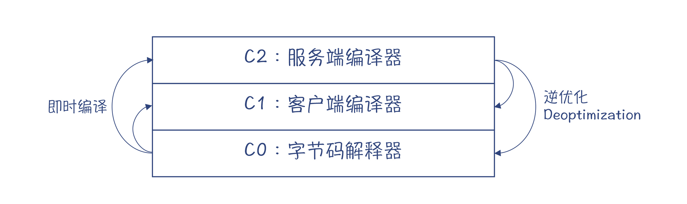
图1：分层编译
由于C2会做一些激进优化，比如说，它会根据程序运行的统计信息，认为某些程序分支根本不会被执行，从而根本不为这个分支生成代码。不过，有时做出这种激进优化的假设其实并不成立，那这个时候就要做一个逆优化（Deoptimization），退回到使用C1的代码，或退回到用解释器执行。
触发即时编译，需要检测热点代码。一般是以方法为单位，虚拟机会看看该方法的运行频次是否很高，如果运行特别频繁，那么就会被认定为是热点代码，从而就会被触发即时编译。甚至如果一个方法里，有一个循环块是热点代码（比如循环1.5万次以上），这个时候也会触发编译器去做即时编译，在这个方法还没运行完毕的时候，就被替换成了机器码的版本。由于这个时候，该方法的栈帧还在栈上，所以我们把这个技术叫做栈上替换（On-stack Replacement，OSR）。栈上替换的技术难点，在于让本地变量等数据无缝地迁移，让运行过程可以正确地衔接。
Graal：用Java编写的JIT编译器
如果想深入地研究Java所采用的JIT编译技术，我们必须去看它的源码。可是，对于大多数Java程序员来说，如果去阅读C++编写的编译器代码，肯定会有些不适应。
一个好消息是，Oracle公司推出了一个完全用Java语言编写的JIT编译器：Graal，并且也有开放源代码的社区版，你可以下载安装并使用。
用Java开发一款编译器的优点是很明显的。
- 首先，Java是内存安全的，而C++程序的很多Bug都与内存管理有关，比如可能不当地使用了指针之类的。
- 第二，与Java配套的各种工具（比如IDE）更友好、更丰富。
- 第三，Java的性能并不低，所以能够满足对编译速度的需求。
- 最后，用Java编译甚至还能节省内存的占用，因为Java采用的是动态内存管理技术，一些对象没用了，其内存就会被回收。而用C++编写的话，可能会由于程序员的疏忽，导致一些内存没有被及时释放。
从Java9开始，你就可以用Graal来替换JDK中的JIT编译器。这里有一个JVMCI（JVM Compiler Interface）接口标准，符合这个接口标准的JIT编译器，都可以被用于JVM。
Oracle公司还专门推出了一款JVM，叫做GraalVM。它除了用Graal作为即时编译器以外，还提供了一个很创新的功能：在一个虚拟机上支持多种语言，并且支持它们之间的互操作。你知道，传统的JVM上已经能够支持多种语言，比如Scala、Clojure等。而新的GraalVM会更进一步，它通过一个Truffle框架，可以支持JavaScript、Ruby、R、Python等需要解释执行的语言。
再进一步，它还通过一个Sulong框架支持LLVM IR，从而支持那些能够生成LLVM IR的语言，如C、C++、Rust等。想想看，在Java的虚拟机上运行C语言，还是有点开脑洞的！
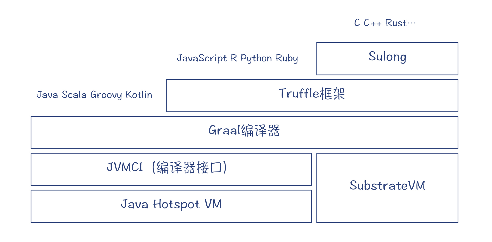
图2：GraalVM的架构
最后，GraalVM还支持AOT编译，这就让Java可以编译成本地代码，让程序能更快地启动并投入高速运行。我听说最近的一些互联网公司，已经在用Graal做AOT编译，来生成本地镜像，提高应用的启动时间，从而能够更好地符合云原生技术的要求。
修改并运行Graal
好，那接下来，我就带你一起动手修改一下Graal编译器，在这个过程中，你就能对Graal的程序结构熟悉起来，消除对它的陌生感，有助于后面深入探索其内部的实现机制。
在本课程中，我采用了Graal的20.0.1版本的源代码。你可以参考Graal中的文档来做编译工作。
首先，下载源代码（指定了代码的分支）：
git clone -b vm-20.0.1 https://github.com/oracle/graal.git
接着，下载GraalVM的构建工具mx，它是用Python2.7编写的，你需要有正确的Python环境：
git clone https://github.com/graalvm/mx.git
export PATH=$PWD/mx:$PATH
你需要在自己的机器上设置好JDK8或11的环境。我这里是在macOS上，采用JDK8。
export PATH="/Library/Java/JavaVirtualMachines/openjdk1.8.0_252-jvmci-20.1-b02-fastdebug/Contents/Home/bin:$PATH"
export JAVA_HOME=/Library/Java/JavaVirtualMachines/openjdk1.8.0_252-jvmci-20.1-b02-fastdebug/Contents/Home
好了，现在你就可以编译Graal了。你可以在Graal源代码的compiler子目录中，运行mx build：
mx build
编译完毕以后，你可以写一个小小的测试程序，来测试Graal编译器的功能。
javac Foo.java //编译Foo.java
mx vm Foo //运行Foo.java，相当于执行java Foo
“mx vm”命令在第一次运行的时候，会打包出一个新的GraalVM，它所需要的HotSpot VM，是从JDK中拷贝过来的，然后它会把Graal编译器等其他模块也添加进去。
Foo.java的源代码如下。在这个示例程序中，main方法会无限次地调用add方法，所以add方法就成为了热点代码，这样会逼迫JIT编译器把add方法做即时编译。
public class Foo{
public static void main(String args[]){
int i = 0;
while(true){
if(i%1000==0){
System.out.println(i);
try{
Thread.sleep(100); //暂停100ms
}catch(Exception e){}
}
i++;
add(i,i+1);
}
}
public static int add(int x, int y){
return x + y;
}
由于我们现在已经有了Graal的源代码，所以我们可以在源代码中打印一点信息，来显示JIT是什么时候被触发的。
org.graalvm.compiler.hotspot.HotspotGraalCompiler.compileMethod()方法，是即时编译功能的入口，你可以在里面添加一行输出功能，然后用“mx build”命令重新构建。
public CompilationRequestResult compileMethod(CompilationRequest request) {
//打印被编译的方法名和字节码
System.out.println("Begin to compile method: " + request.getMethod().getName() + "\nbytecode: " + java.util.Arrays.toString(request.getMethod().getCode()));
return compileMethod(request, true, graalRuntime.getOptions());
}
你在compiler目录里，打出“mx ideinit”命令，就可以为Eclipse、IntelliJ Idea等编译器生成配置信息了。你可以参照文档来做好IDE的配置。
注意：我用Eclipse和IntelliJ Idea都试了一下。Idea的使用体验更好一些。但用mx ideinit命令为Idea生成的配置文件，只是针对JDK8的，如果要改为JDK11，还需要手工修改不少配置信息。- 在使用Idea的时候，你要注意安装python插件，文档中建议的其他插件可装可不装。- 在使用Eclipse时，我曾经发现有一些报错信息，是因为IDE不能理解一些注解。你如果也遇到了类似情况，稍微修改一下头注释就能正常使用了。
mx ideinit
然后，你可以运行下面的命令来执行示例程序：
mx vm \
-XX:+UnlockExperimentalVMOptions \
-XX:+EnableJVMCI \
-XX:+UseJVMCICompiler \
-XX:-TieredCompilation \
-XX:CompileOnly=Foo.add \
Foo
你会看到，命令中包含了很多不同的参数，它们分别代表了不同的含义。
- -XX:+UnlockExperimentalVMOptions：启用试验特性。
- -XX:+EnableJVMCI：启用JVMCI功能。
- -XX:+UseJVMCICompiler ：使用JVMCI编译器，也就是Graal。
- -XX:-TieredCompilation ：禁用分层编译。
- -XX:CompileOnly=Foo.add：只编译add方法就行了。
当程序运行以后，根据打印的信息，你就能判断出JIT编译器是否真的被调用了。实际上，它是在add方法执行了15000次以后才被调用的。这个时候，JVM会认为add方法是一个热点。因为JIT是在另一个线程启动执行的，所以输出信息要晚一点。
好了，通过这个实验，你就能直观地了解到，JVM是如何判断热点并启动JIT机制的了。
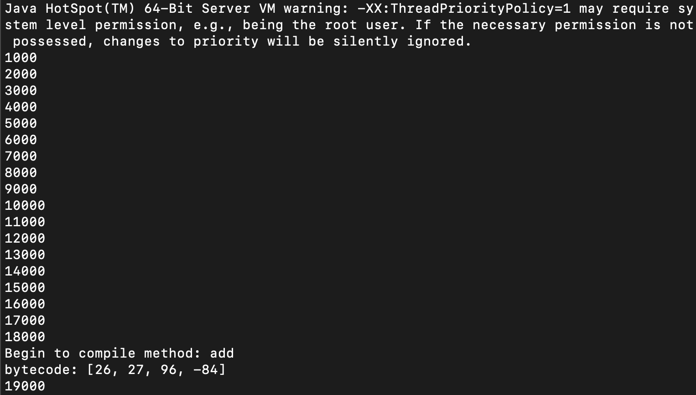
另外，在这个实验中，你还可以通过“-XX:CompileThreshold”参数，来修改热点检测的门槛。比如说，你可以在“-XX:CompileThreshold=50”，也就是让JVM在被add方法执行了50次之后，就开始做即时编译。你还可以使用“-Xcomp”参数，让方法在第一次被调用的时候就开始做编译。不过这样编译的效果会差一些，因为让方法多运行一段时间再编译，JVM会收集一些运行时的信息，这些信息会有助于更好地做代码优化。这也是AOT编译的效果有时会比JIT差的原因，因为AOT缺少了运行时的一些信息。
好了，接下来，我们再来看看JIT编译后的机器码是什么样子的。
JIT所做的工作，本质上就是把字节码的Byte数组翻译成机器码的Byte数组，在翻译过程中，编译器要参考一些元数据信息（符号表等），再加上运行时收集的一些信息（用于帮助做优化）。
前面的这个示例程序，它在运行时就已经打印出了字节码：[26, 27, 96, -84]。如果我们转换成16进制，就是[1a, 1b, 60, ac]。它对应的字节码是：[iload_0, iload_1, iadd, ireturn]。
我们暂时忽略掉这中间的编译过程，先来看看JIT编译后生成的机器码。
Graal编译完毕以后，是在org.graalvm.compiler.hotspot.CompilationTask的performCompilation方法中，把编译完毕的机器码安装到缓存区，用于后续执行。在这里，你可以加一点代码，打印编译后的结果。
...
installMethod(debug, result); //result是编译结果
System.out.println("Machine code: " + java.util.Arrays.toString(result.getTargetCode()));
...
打印输出的机器码数组如下：
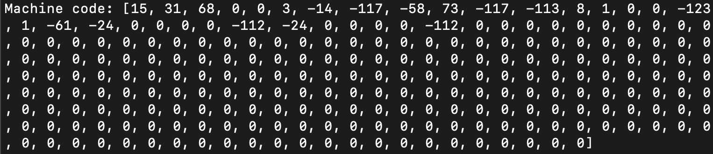
我们光看这些机器码数组，当然是看不出来有什么含义的，但JDK可以把机器码反编译成汇编码，然后打印输出，就会更方便被我们解读。这就需要一个反汇编工具hsdis。
运行“mx hsdis”命令，你可以下载一个动态库（在macOS上是hsdis-amd64.dylib，在Linux上以so结尾，在Windows上以dll结尾）。这个动态库会被拷贝到JDK的lib目录下，这样我们就可以通过命令行参数，让JVM输出编译生成的汇编码。
sudo -E mx hsdis #用sudo是为了有权限把动态库拷贝到系统的JDK的lib目录
注：由于我使用mx命令来运行示例程序，所以使用的JDK实际上是GraalVM从系统JDK中拷贝过来的版本，因此我需要手工把hsdis.dylib拷贝到graal-vm-20.0.1/compiler/mxbuild/darwin-amd64/graaljdks/jdk11-cmp/lib目录下。
mx vm \
-XX:+UnlockExperimentalVMOptions \
-XX:+EnableJVMCI \
-XX:+UseJVMCICompiler \
-XX:-TieredCompilation \
-XX:+PrintCompilation \
-XX:+UnlockDiagnosticVMOptions \
-XX:+PrintAssembly \
-XX:CompileOnly=Foo.add \
Foo
输出的汇编码信息如下：
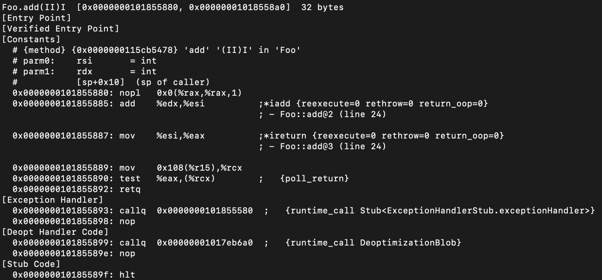
我来解释一下这段汇编代码的含义：
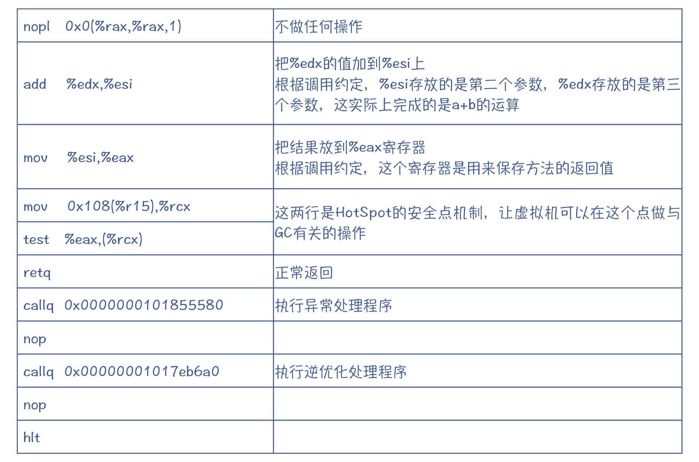
好了，现在你已经能够直观地了解JIT启动的时机：检测出热点代码；以及它最后生成的结果：机器码。
但我们还想了解一下中间处理过程的细节，因为这样才能理解编译器的工作机制。所以这个时候，如果能够跟踪Graal的执行过程就好了，就像调试一个我们自己编写的程序那样。那么我们能做到吗？
当然是可以的。
跟踪Graal的运行
Graal是用Java编写的，因此你也可以像调试普通程序一样调试它。你可以参考源代码中的这篇与调试有关的文档。
由于Graal是在JVM中运行的，所以你要用到JVM的远程调试模式。我们仍然要运行Foo示例程序，不过要加个“-d”参数，表示让JVM运行在调试状态下。
mx -d vm \
-XX:+UnlockExperimentalVMOptions \
-XX:+EnableJVMCI \
-XX:+UseJVMCICompiler \
-XX:-TieredCompilation \
-XX:CompileOnly=Foo.add \
Foo
这个时候，在JVM启动起来之后，会在8000端口等待调试工具跟它连接。
你可以使用Eclipse或Idea做调试工具。我以Eclipse为例，在前面运行“mx ideinit”的时候，我就已经设置了一个远程调试的配置信息。
你可以打开“run>debug configurations…”菜单，在弹出的对话框中，选择Remote Java Application，可以看到几个预制好的配置。
然后，点击“compiler-attach-localhost-8000”，你可以看到相关属性。其中，连接信息正是本机的8000端口。
把Project改成“org.graalvm.compiler.hotspot”，然后点击Debug按钮。
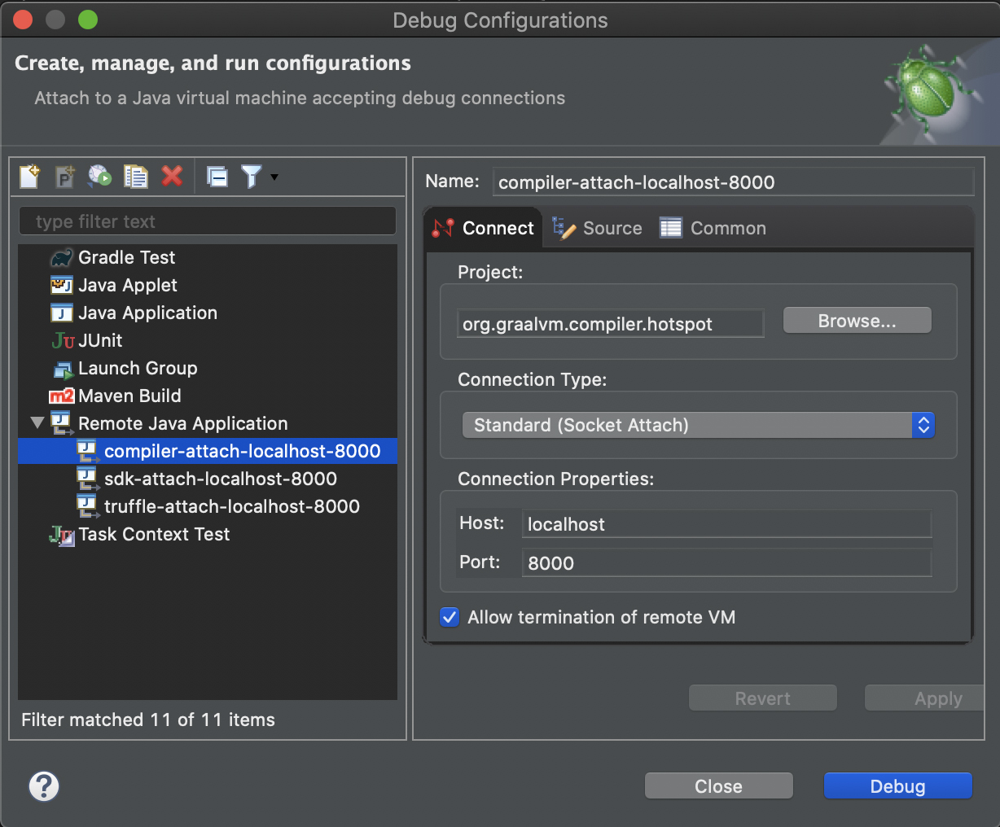
补充：如果你使用的是Idea，你也会找到一个预制好的远程调试配置项：GraalDebug。直接点击就可以开始调试。
为了方便调试，我在org.graalvm.compiler.hotspot.compileMethod()方法中设置了断点，所以到了断点的时候，程序就会停下来，而不是一直运行到结束。
当你点击Debug按钮以后，Foo程序会继续运行。在触发了JIT功能以后，JVM会启动一个新线程来运行Graal，而Foo则继续在主线程里运行。因为Foo一直不会结束，所以你可以从容地进行调试，不用担心由于主线程的退出，而导致运行Graal的线程也退出。
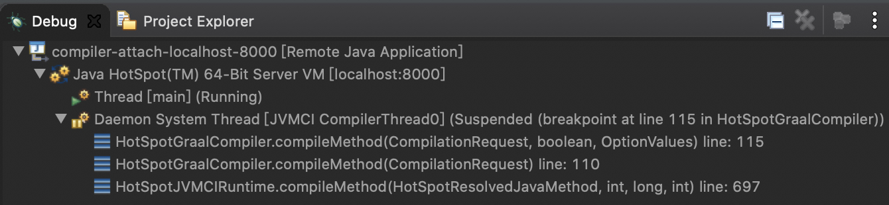
现在，你可以跟踪Graal的编译过程，看看能发现些什么。在这个过程中，你需要一点耐心，慢慢理解整个代码结构。
Graal执行过程的主要结构如下图所示。
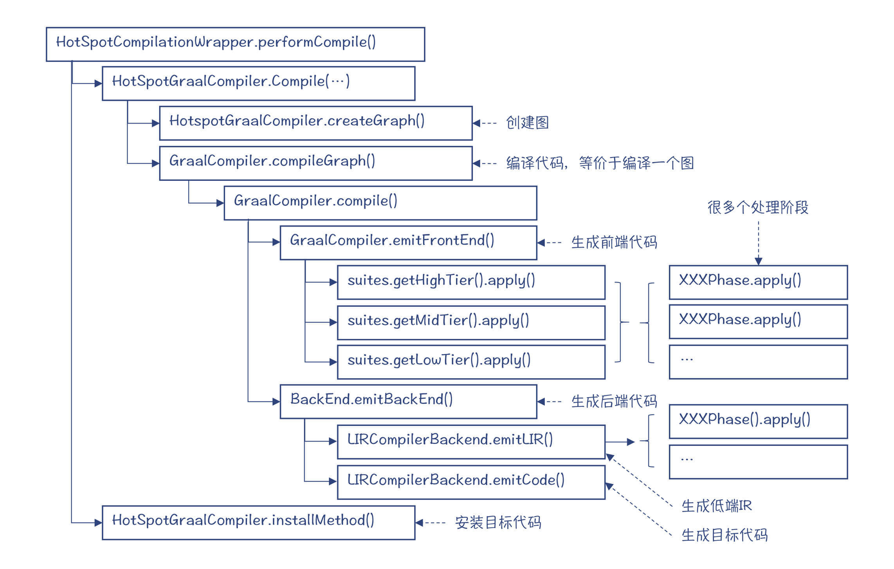
图3：Graal执行过程的主要结构
首先，你会发现，在编译开始的时候，Graal编译器要把字节码转化成一个图的数据结构。而后续的编译过程，都是对这个图的处理。这说明了这个图很重要，而这个图就是Graal要用到的IR，在Graal编译器中，它也被叫做HIR。
接着，你会看到，整个编译过程被分成了前端和后端两个部分。前端部分使用的IR是HIR。而且在前端部分，HIR又分成了高（HighTier）、中（MidTier）、低（LowTier）三层。在每个层次里，都要执行很多遍（Phase）对图的处理。这些处理，指的就是各种的优化和处理算法。而从高到低过渡的过程，就是不断Lower的过程，也就是把IR中，较高抽象度的节点替换成了更靠近底层实现的节点。
在后端部分，则要生成一种新的IR，也就是我们在第6讲中提到过的LIR，并且Graal也要对它进行多遍处理。最后一步，就是生成目标代码。
下图中，我举了一个例子，列出了编译器在前端的三个层次以及在后端所做的优化和处理工作。
你要注意的是，在编译不同的方法时，所需要的优化工作也是不同的，具体执行的处理也就不一样。并且这些处理执行过程也不是线性执行的，而可能是一个处理程序调用了另一个处理程序，嵌套执行的。
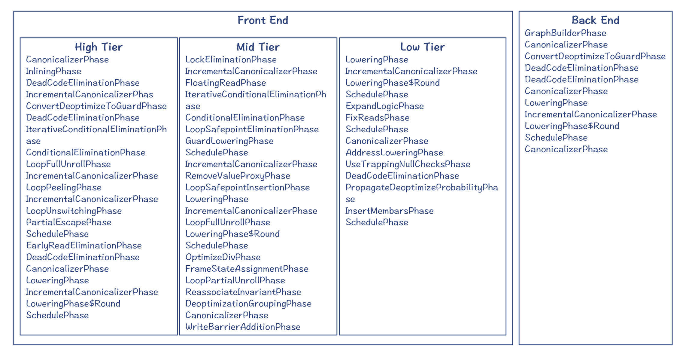
图4：一个例子，前端三个层次和后端所做的处理
不过通过跟踪Graal的运行过程，你可以留下一个直观的印象：Graal编译器的核心工作，就是对图（IR）的一遍遍处理。
在下一讲中，我就会进一步讲述Graal的IR，并会带你一起探讨优化算法的实现过程，你可以了解到一个真实编译器的IR是怎样设计的。
课程小结
今天这一讲，我带你大致了解了Java的JIT编译器。你需要重点关注以下几个核心要点：
- JIT可能会用到多个编译器，有的编译速度快但不够优化（比如C1，客户端编译器），有的够优化但编译速度慢（比如C2，服务端编译器），所以在编译过程中会结合起来使用。
- 你还需要理解逆优化的概念，以及导致逆优化的原因。
- 另外，我还带你了解了Graal这个用Java编写的Java JIT编译器。最重要的是，通过查看它的代码、修改代码、运行和调试的过程，你能够建立起对Graal编译器的亲切感，不会觉得这些技术都是很高冷的，不可接近的。当你开始动手修改的时候，你就踏上了彻底掌握它的旅途。
- 你要熟练掌握调试方法，并且熟练运用GraalVM的很多参数，这会有利于你去做很多实验，来深入掌握Graal。
本讲的思维导图我放在这里了，供你参考：
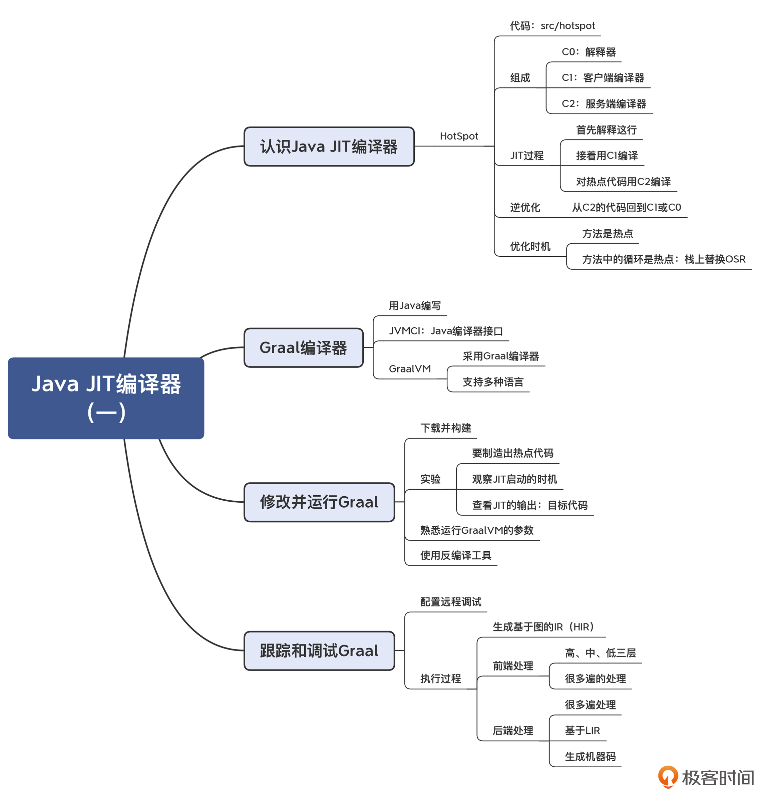
一课一思
你能否把示例程序的add函数改成一个需要计算量的函数，然后，你可以比较一下，看看JIT前后性能相差了多少倍？通过这样的一个例子，你可以获得一些感性认识。
有相关的问题或者是思考呢，你都可以给我留言。如果你觉得有收获，你也可以把今天的内容分享给更多的朋友。
参考资料
- GraalVM项目的官方网站：graalvm.org。
- Graal的Github地址。
- Graal项目的出版物。有很多围绕这个项目来做研究的论文，值得一读。
© 2019 - 2023 Liangliang Lee. Powered by gin and hexo-theme-book.